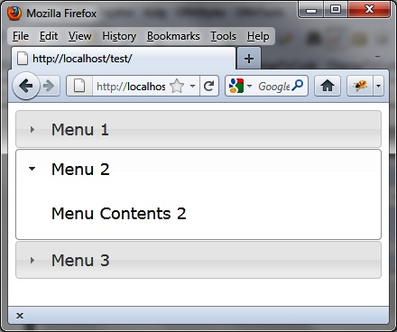
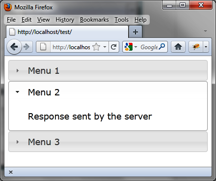

{% include JB/setup %}
{% raw %}
<div>
<div class="book" title="Examples of Using Accordion Menus"><div class="book"><div class="book"><div class="book"><h1 class="title2"><a id="examples_of_using_accordion_menus" class="calibre1"></a>Examples of Using Accordion Menus</h1></div></div></div><p class="calibre7">In this section, we’ll incorporate the use of menus into a
    UI.</p><div class="book" title="Opening Any Menu"><div class="book"><div class="book"><div class="book"><h2 class="title5"><a id="opening_any_menu" class="calibre1"></a>Opening Any Menu</h2></div></div></div><p class="calibre7">When creating an accordion menu, the first menu (index 0) is open
      by default. Let’s configure our page to open the second menu (index 1)
      instead. This is done using <code class="literal">accordion
      ("activate")</code>:</p><a id="I_programlisting3_d1e2362" class="firstname"></a><pre class="programlisting">&lt;!DOCTYPE html&gt;
&lt;script src = jquery.js&gt;&lt;/script&gt;
&lt;script src = jqueryui/js/jquery-ui-1.8.16.custom.min.js&gt;&lt;/script&gt;

&lt;link rel=stylesheet type=text/css
      href=jqueryui/css/smoothness/jquery-ui-1.8.16.custom.css /&gt;

&lt;div id="accordion"&gt;
  &lt;h1&gt;&lt;a&gt;Menu 1&lt;/a&gt;&lt;/h1&gt;
  &lt;div&gt;Menu Contents 1&lt;/div&gt;
  &lt;h1&gt;&lt;a&gt;Menu 2&lt;/a&gt;&lt;/h1&gt;
  &lt;div&gt;Menu Contents 2&lt;/div&gt;
  &lt;h1&gt;&lt;a&gt;Menu 3&lt;/a&gt;&lt;/h1&gt;
  &lt;div&gt;Menu Contents 3&lt;/div&gt;
&lt;/div&gt;

&lt;script&gt;

<span class="firstname"><strong class="userinput">$("#accordion").accordion ().accordion ("activate", 1);</strong></span>

&lt;/script&gt;</pre><p class="calibre7">The first <code class="literal">accordion ()</code> method
      is required to create the accordion menu, while the second method
      activates the menu with index 1.</p><p class="calibre7">The second menu is open at the launch of the application, as shown
      in <a class="ulink" href="ch03s05.html#opening_the_second_menu_using_the_quotat" title="Figure 3-5. Opening the second menu using the “activate” action">Figure 3-5</a>.</p><div class="book"><div class="figure"><a id="opening_the_second_menu_using_the_quotat" class="firstname"></a><div class="book"><div class="book"><a id="I_mediaobject3_d1e2379" class="firstname"></a></div></div><p class="title4">Figure 3-5. Opening the second menu using the “activate” action</p></div></div></div><div class="book" title="Loading the Contents of a Menu with Ajax: Using options"><div class="book"><div class="book"><div class="book"><h2 class="title5"><a id="loading_the_contents_of_a_menu_with_ajax" class="calibre1"></a>Loading the Contents of a Menu with Ajax: Using options</h2></div></div></div><p class="calibre7">Let’s change the menu contents via Ajax when it opens. We will use
      the <code class="literal">options.change</code> and <code class="literal">options.changestart</code> methods. The <code class="literal">options.changestart</code> method will display a
      placeholder (in this case, <code class="literal">"Loading"</code>)
      and the <code class="literal">options.change</code> method makes
      the Ajax call:</p><a id="I_programlisting3_d1e2404" class="firstname"></a><pre class="programlisting">&lt;!DOCTYPE html&gt;
&lt;script src = jquery.js&gt;&lt;/script&gt;
&lt;script src = jqueryui/js/jquery-ui-1.8.16.custom.min.js&gt;&lt;/script&gt;

&lt;link rel=stylesheet type=text/css
      href=jqueryui/css/smoothness/jquery-ui-1.8.16.custom.css /&gt;

&lt;div id="accordion"&gt;
  &lt;h1&gt;&lt;a&gt;Menu 1&lt;/a&gt;&lt;/h1&gt;
  &lt;div&gt;Menu Contents 1&lt;/div&gt;
  &lt;h1&gt;&lt;a&gt;Menu 2&lt;/a&gt;&lt;/h1&gt;
  &lt;div&gt;Menu Contents 2&lt;/div&gt;
  &lt;h1&gt;&lt;a&gt;Menu 3&lt;/a&gt;&lt;/h1&gt;
  &lt;div&gt;Menu Contents 3&lt;/div&gt;
&lt;/div&gt;

&lt;script&gt;

$("#accordion").accordion({
  changestart : function (event, menus)
  {
    menus.newContent.html ("Loading");
  },
  change : function (event, menus)
  {
    menus.newContent.load ("action.php");
  }
});

&lt;/script&gt;</pre><p class="calibre7">The <code class="literal">menus.newContent</code> object is
      a jQuery class object that is associated with the menu that opens. The
      <em class="calibre4">action.php</em> file is as
      follows:</p><a id="I_programlisting3_d1e2414" class="firstname"></a><pre class="programlisting">&lt;?
  $txt = "&lt;span&gt; Response sent by the server &lt;/span&gt;";
  $txt = utf8_encode($txt);
  echo ($txt);</pre><p class="calibre7">To test this program, we must use a URL starting with http://
      (e.g., <a class="ulink" href="http://localhost">http://localhost</a>), otherwise the Ajax
      request generates an error.</p><p class="calibre7">At the opening of each menu, the <code class="literal">"Loading"</code> message appears, then disappears
      when the Ajax call is complete. It is then replaced with the code
      returned by the server (<a class="ulink" href="ch03s05.html#the_code_returned_by_the_server_via_ajax" title="Figure 3-6. The code returned by the server via Ajax">Figure 3-6</a>).</p><div class="book"><div class="figure"><a id="the_code_returned_by_the_server_via_ajax" class="firstname"></a><div class="book"><div class="book"><a id="I_mediaobject3_d1e2430" class="firstname"></a></div></div><p class="title4">Figure 3-6. The code returned by the server via Ajax</p></div></div><p class="calibre7">We can also use the <code class="literal">accordionchange</code> and <code class="literal">accordionchangestart</code> events to initialize the
      contents of the menus. This is discussed in the following
      section.</p></div><div class="book" title="Loading the contents of a menu with Ajax: Using accordionchange"><div class="book"><div class="book"><div class="book"><h2 class="title5"><a id="loading_the_contents_of_a_menu_with" class="calibre1"></a>Loading the contents of a menu with Ajax: Using
      accordionchange</h2></div></div></div><p class="calibre7">This example is similar to the previous, but here we want to use
      the <code class="literal">accordionchange</code> and <code class="literal">accordionchangestart</code> events with the <code class="literal">bind ()</code> method. The code to do this is as
      follows:</p><a id="I_programlisting3_d1e2457" class="firstname"></a><pre class="programlisting">&lt;!DOCTYPE html&gt;
&lt;script src = jquery.js&gt;&lt;/script&gt;
&lt;script src = jqueryui/js/jquery-ui-1.8.16.custom.min.js&gt;&lt;/script&gt;

&lt;link rel=stylesheet type=text/css
      href=jqueryui/css/smoothness/jquery-ui-1.8.16.custom.css /&gt;

&lt;div id="accordion"&gt;
  &lt;h1&gt;&lt;a&gt;Menu 1&lt;/a&gt;&lt;/h1&gt;
  &lt;div&gt;Menu Contents 1&lt;/div&gt;
  &lt;h1&gt;&lt;a&gt;Menu 2&lt;/a&gt;&lt;/h1&gt;
  &lt;div&gt;Menu Contents 2&lt;/div&gt;
  &lt;h1&gt;&lt;a&gt;Menu 3&lt;/a&gt;&lt;/h1&gt;
  &lt;div&gt;Menu Contents 3&lt;/div&gt;
&lt;/div&gt;

&lt;script&gt;

$("#accordion").accordion().bind ("accordionchangestart", function (event, menus)
{
  menus.newContent.html ("Loading");
}).bind ("accordionchange", function (event, menus)
{
    menus.newContent.load ("action.php");
});

&lt;/script&gt;</pre><p class="calibre7">The <em class="calibre4">action.php</em> file is as
      follows (this is identical to the contents of the file when we used
      <code class="literal">options.change</code> and <code class="literal">options.changestart</code>):</p><a id="I_programlisting3_d1e2470" class="firstname"></a><pre class="programlisting">&lt;?
  $txt = "&lt;span&gt; Response sent by the server &lt;/span&gt;";
  $txt = utf8_encode($txt);
  echo ($txt);</pre></div></div></div>

{% endraw %}

